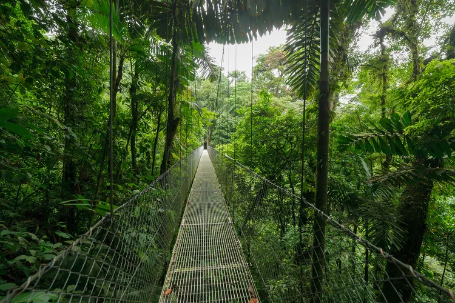
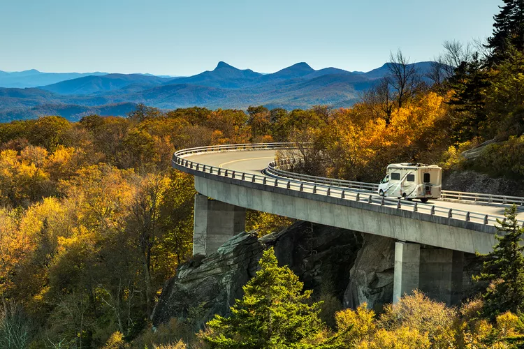
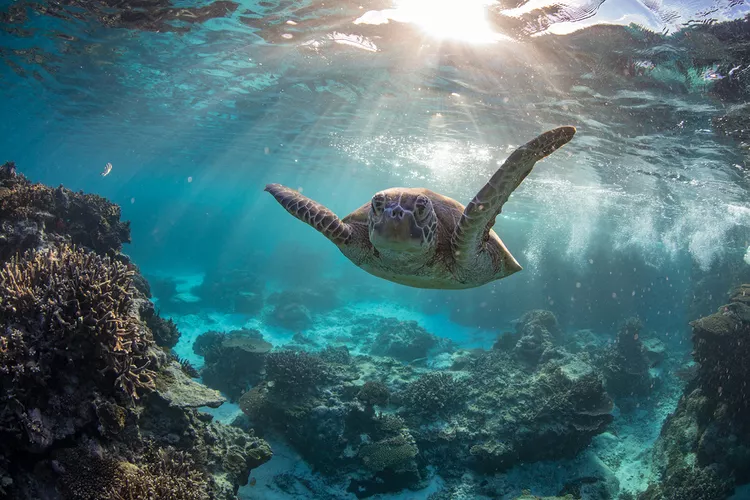
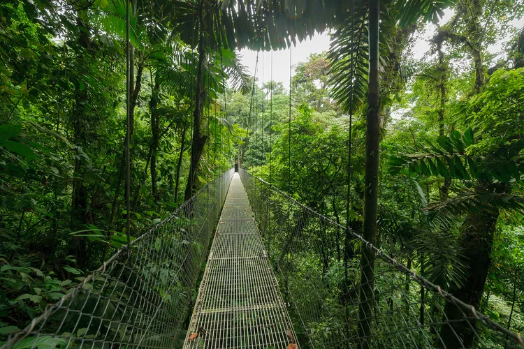
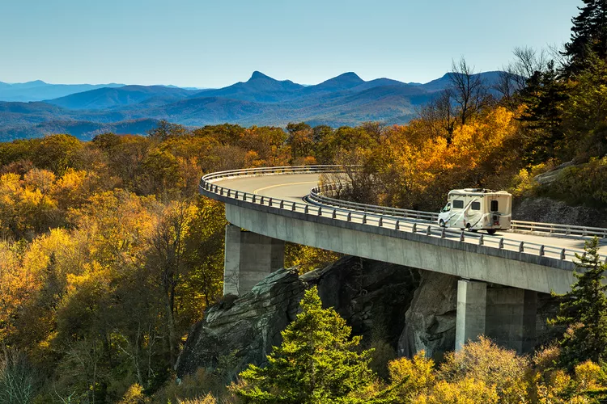
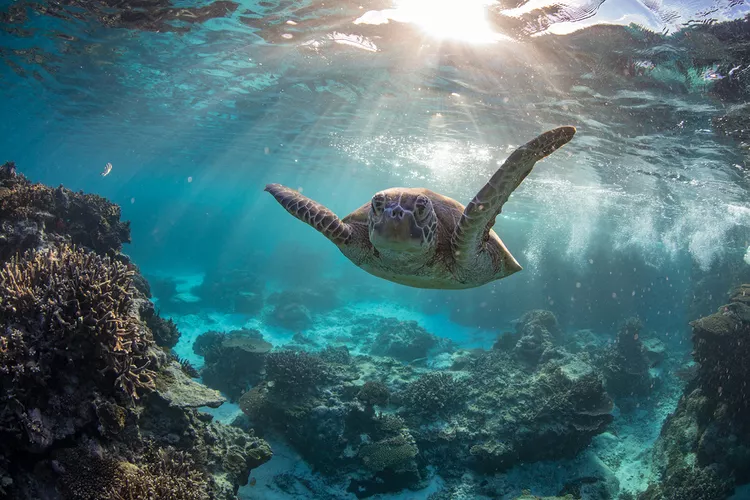

| Do your research on the culture and customs of the place
you're visiting |
Don't assume that everyone speaks your language or
shares your customs |
| Try the local cuisine with an open mind and don't be
afraid to ask questions |
Don't be disrespectful of the local cuisine or dietary
restrictions |
| Pack appropriate clothing and gear for the climate and
activities |
Don't wear clothing that is inappropriate or offensive
to the local culture
|
| Be respectful of religious and cultural practices |
Don't make fun of or disrespect local religious or
cultural practices |
| Be aware of your surroundings and safety |
Don't put yourself in dangerous or risky situations |
| Be open to new experiences and meeting new people - you'll
be suprised! |
Don't be close-minded or disrespectful to those with
different beliefs or
backgrounds |
| Be mindful of your impact on the environment and local
communities |
Don't contribute to pollution or disrespect the local
environment or
communities |
| Learn some basic phrases in the local language before your
travel |
Don't assume rely solely on translation apps |
| Be respectful of local traditions. This also means
immersing yourself
and appreciating the experience!
|
Don't engage in activities that are illegal or
disrespectful to local customs
and traditions |
| Have fun and enjoy the experience! |
Don't let negative experiences or attitudes ruin your
trip |
 




